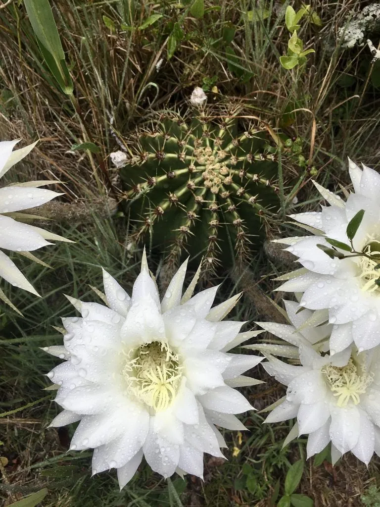

多肉植物 · 植物界
草球 Echinopsis tubiflora

仙人掌科仙人球属球状多肉，夏季夜晚开出白色大喇叭花，花香浓郁，是容易开花、适合新手栽培的仙人球，原产南美。
- 分类
- 门被子植物门纲木兰纲目石竹目科仙人掌科属仙人球属
- 栖息环境
- 南美阿根廷的干旱草原与石质坡地，喜光、耐旱
- 地理分布
- 原产南美洲，世界各地广泛盆栽，中国各地常见
- 保护级别
- 暂无评估；CITES 附录Ⅱ（仙人掌科）
物种志
草球为仙人掌科仙人球属球状或短柱状多肉植物，高 20–40 厘米，直径 10–15 厘米，具 10 余条棱，棱上刺座排列整齐，刺短而硬。花侧生，喇叭形，长 15–20 厘米，白色，夜间开放，有香气，花期夏季；果实为蒴果，长圆形。
草球原产南美洲阿根廷一带的干旱地区，喜阳光充足、温暖干燥和通风良好的环境，耐旱怕积水，冬季需保持 5℃ 以上。它生长较快，容易群生，是仙人球中比较易开花的种类，夏季夜晚开出的大型白花十分醒目。栽培以颗粒土为主，生长期浇水干透浇透，冬季控水；繁殖以分株和播种为主，母株基部的小球可分栽，分栽后当年即可生长。
形态与习性
- 株高高 20–40 厘米，直径 10–15 厘米
- 花期夏季，花白色，夜间开放
- 果期花后结蒴果
- 光照喜充足阳光
- 水分耐旱，干透浇透，忌积水
- 土壤颗粒为主、排水良好的矿质土
- 繁殖分株、播种
- 主要用途家庭盆栽、阳台观赏
趣味知识
- 草球夏季夜晚开出白色大喇叭花，花长可达 15–20 厘米，香气浓郁。
- 它是仙人球中比较容易开花的种类，生长快、容易群生。
- 母株基部会长出小球，分栽后即可长成新的植株。
- 草球原产南美阿根廷，耐旱怕寒，冬季需保持 5℃ 以上。